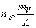

|
В. И. ЕЛИСЕЕВ ВВЕДЕНИЕ В МЕТОДЫ ТЕОРИИ
ФУНКЦИЙ ПРОСТРАНСТВЕННОГО КОМПЛЕКСНОГО ПЕРЕМЕННОГО |
|
Продолжение 2 из 2. 6.4. Альфа распад. Схема расчета распада. Ошибочность теории кулоновского барьера. Структура пространства в малых линейных размерах.
Величина сжатия
a-частицы или кинетическая энергия ее при образовании во втором блоке равна этой же величине первого блока, как следствия постоянной величины обменного кванта на массу фрагментов потенциального распада. Поэтому Энергия необходимая для реализации альфа распада равна, где первый член определяет энергию основного состояния ядра марганца.
Электронный или альфа распады любого из блоков дают новую моду для конечного продукта распада исходного ядра. При электронном распаде ядро платины переходит в ядро золота. Схема распада: Так как, мода исходного ядра состоит из двух блоков энергия ядра золота будет определяться суммой энергий, составляющих после распада блоков
при электронном распаде через первый блок.
при электронном распаде второго блока.
Проверкой проведенного расчета служит равенство, вычисленных величин по этим двум формулам. Сумма в правой части определяет моду структуризации для нового ядра, которое также может находиться в возбужденном состоянии.
Альфа распад ядра платины происходит по схеме  .
.
Детализация этой схемы, как и в предыдущем случае, дает два варианта образования ядра осмия в ядре платины перед моментом альфа распада.
при альфа распаде второго блока.
при альфа распаде первого блока.
Энергия ядра золота определяется модой структуризации из двух новых блоков отличается от энергии основного состояния, этого ядра, так, что разность между этими энергиями с учетом кинетической энергии электрона в одном из блоков определяет энергию электронного распада.
Энергия ядра осмия в основном состоянии за вычетом энергии ядра осмия, состоящего из двух блоков в ядре платины с учетом энергии альфа частицы в одном из блоков определит энергию альфа распада. Это конечный энергетический баланс соответствует реакциям электронного и альфа распадам ядра, который исследуется в теории радиоактивных распадов без учета мод структуризации . В кратком изложении теории радиоактивных распадов эти процессы были объяснены несферичностью формы ядер, которая вызывает нахождение их в возбужденном состоянии, а также механизмом туннельного проникновения альфа частицы через потенциальный кулоновский барьер.
Кулоновский барьер вычислим для каждого блока структуры по формулам:
-для первого блока,
-для второго блока,
- для исходного ядра сферической формы.
Если учитывать введенную структуру моды, то следует кулоновский барьер вычислять по формуле
Введение коэффициента К >1 приводит к снижению рассчитываемой величины .В первых трех формулах
Формула более адекватно отвечает структуре ядра и проводимым расчетам. Мода ядра задает эллипсоидальную форму ядра . Как установлено в экспериментах отношение осей при этой форме может достигать 1,3 . Это величина достаточно большая для того, чтобы одна из величин кулоновского барьера (одного из блоков ) стала меньше кулоновского барьера исходного ядра . Формуладает значения ниже значений по формуле Поэтому, в исследованиях оценку проводим по этим двум формулам.
Мода и рассмотренные варианты распада дают несколько комбинаций для их оценок .
Альфа распад исходного ядра обусловлен возбуждение блоков моды за счет потенциального альфа распада каждого из них . В этом случае имеем энергию возбуждения для альфа распада и преодоления трех вариантов кулоновского барьера. Два первых из которых определяют альфа распад одного из блоков при и как следствие перестройки моды .Третий определяет распад исходного ядра. Имеем

Рис 61. Схема электронного распада ядра.
Можно рассчитать величину для кулоновского барьера в интервале
Правая часть неравенства определит вероятность распада исходного ядра, левая часть перестройку моды за счет перехода ядра гелия из одного блока в другой.
Далее рассмотрим комбинацию возбуждения первого блока за счет электронного распада, а второго за счет альфа распада. Здесь также возможно иметь четыре варианта:
Наибольшая вероятность выброса альфа частицы определяется условием  , для которых величина кулоновского барьера выше величин кулоновских барьеров ядер блоков. Условие определяет возможность перестройки моды и переход в новое возбужденное состояние. Если первый блок находится в возбужденном состоянии от возможного процесса электронного распада, а второй альфа распада, то также возможно произвести оценку по четырем возможным каналам распада . Однако нас интересует распад исходного ядра, поэтому приводим для рассмотрения одну формулу
, для которых величина кулоновского барьера выше величин кулоновских барьеров ядер блоков. Условие определяет возможность перестройки моды и переход в новое возбужденное состояние. Если первый блок находится в возбужденном состоянии от возможного процесса электронного распада, а второй альфа распада, то также возможно произвести оценку по четырем возможным каналам распада . Однако нас интересует распад исходного ядра, поэтому приводим для рассмотрения одну формулу
Исследование распада по этой схеме не отличаются от рассмотренных предыдущих вариантов.
Рис 62. Схема
Рассмотрим последний возможный путь возбуждения моды . Оба блока склонны к электронному распаду.
Если величина
то происходит электронный распад исходного ядра. К этой оценке целесообразно подключить критерии электронного распада ядер, которые были получены в предыдущих исследованиях (критерии ).Основным фактором радиоактивного распада является мода структуризации ядра, которая задает его возбужденное состояние, Оценка величины возбуждения производилась по экспериментальным формулам открытых резонансов ( эти формулы приведены в расчетных таблицах). Выбор моды возбуждения выше заданных по этим формулам можно считать нецелесообразным. Таким образом, предлагается расчетный механизм радиоактивных распадов ядер, который детализирует процессы протекающие в ядре. Структура ядра из двух блоков позволяет рассмотреть различные каналы изменения энергии исходного ядра, связанные с его перестройкой внутренней структуры, а также возможностью осуществления радиоактивных распадов.
Возможно исследовать процессы:А) электронный распад одного блока и К –захват другого, как внутренний процесс перестройки
Исходного ядра,
Б) переход нейтрона из одного блока в другой, также внутренний процесс связанный со структурой,
С) переброска протона из блока в блок с преодолением кулоновского барьера,
Д) альфа распад одного блока с захватом альфа частицы другим блоком, также связано с исследованием влияния на процесс кулоновского барьера,
Е) электронный и альфа распадные процессы одного из блоков с распадом основного исходного ядра.
Все процессы могут приводить к новой моде структуризации и новому возбужденному состоянию исходного ядра или его продукта распада.
Рис. 63. Схема позитронного распада ядра.
Мини оглавление:
[0], [1.1.1, 1.1.2, 1.1.3, 1.1.4, 1.1.5, 1.1.6, 1.1.7, 1.1.8, 1.2, 1.2.1, 1.2.2, 1.2.2.a, 1.2.2.b, 1.2.2.c, 1.2.2.d, 1.2.2.e, 1.2.2.f, 1.2.2.g, 1.2.2.h, 1.2.3, 1.3.1, 1.3.2, 1.3.3, 1.3.4, 1.3.5, 1.3.6, 1.4.1, 1.4.2, 1.5, 1.6, 1.7.1, 1.7.2, 1.7.3.1, 1.7.3.2, 1.7.3.3, 1.7.4.1, 1.7.4.2, 1.8.1], [2.1, 2.2],[3.1, 3.2, 3.3, 3.4.1, 3.4.2, 3.4.3, 3.4.4, 3.4.5],[4.1, 4.2, 4.3, 4.4],[5.1, 5.1.Рис.52, 5.2, 5.3, 5.4, 5.4.Т1, 5.4.Т2, 5.4.Т3, 5.5.1, 5.5.2, 5.5.3, 5.5.4],[6.1.1, 6.1.2, 6.2.1, 6.2.2, 6.2.3, 6.2.4, 6.2.5, 6.3, 6.4.1, 6.4.2, 6.5.1, 6.5.2],[7.1, 7.2, 7.3, 7.4, 7.5, 7.6, 7.7.1, 7.7.2, 7.8.1, 7.8.2, 7.8.3, 7.9],[8.1, 8.2.1, 8.2.2, 8.3, 8.4, 8.5, 8.6, 8.6.T1, 8.7, 8.8.1, 8.8.2, 8.8.3, 8.9.1, 8.9.2, 8.9.3, 8.10, 8.10.T2, 8.10.T3],[9.1, 9.2, 9.3, Рис.88, 89, 90, 91, 92, 93, 94, 95, 96, 97, 98, 99, 100],[10.1, 10.2, 10.3, 10.4, 10.5, 10.6, 10.7, 10.8, 10.9, 10.10, 10.11, 10.12, 10.13, 10.14, 10.15.1, 10.15.2, 10.16.1, 10.16.2, 10.17, 10.18],[11]
Размещенный материал является электронной версией книги: © В.И.Елисеев, "Введение в методы теории функций пространственного комплексного переменного", изданной Центром научно-технического творчества молодежи Алгоритм. - М.:, НИАТ. - 1990. Шифр Д7-90/83308. в каталоге Государственной публичной научно-технической библиотеки. Сайт действует с 10 августа 1998.
E-mail: mathsru@gmail.com